온점. 하루를 펼치는 다이어리
아이보리 종이 위에 생각을 적고, 한 가지 일을 마치고, 그날의 꽃을 붙이는 네 개의 책갈피. 큰 온실과 행동 패널에서 날짜·메모·완료 표시를 중심으로 화면을 다시 구성했습니다.
390×844 Chromium 캡처 · 테스트용 예시 데이터 · 실제 iPhone/Safari/키보드 QA는 별도입니다. 입력 중 화면에도 실제 소프트웨어 키보드는 표시되지 않습니다.
오늘의 페이지 · 이전 / 이후
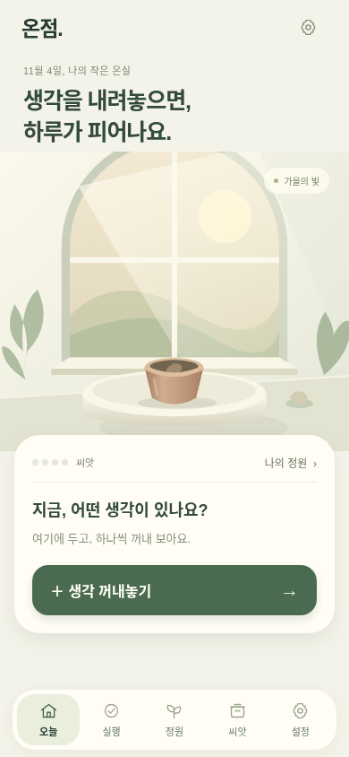
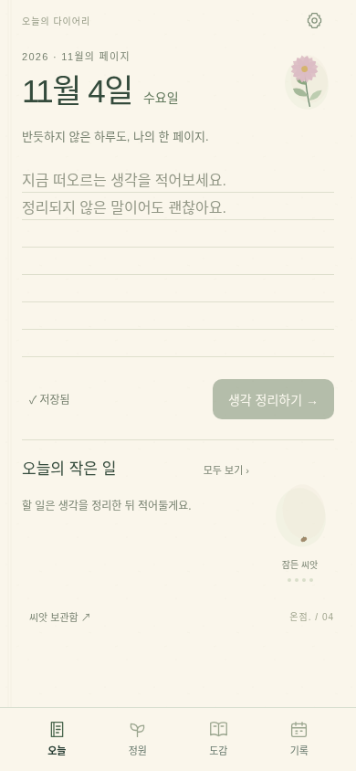
생각을 적고, 한 걸음씩
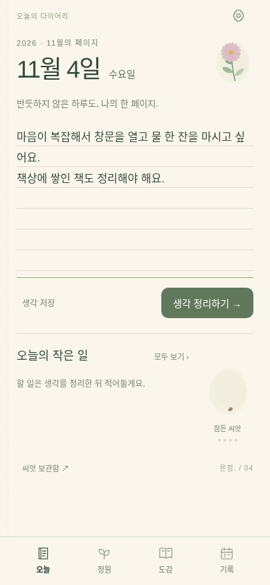
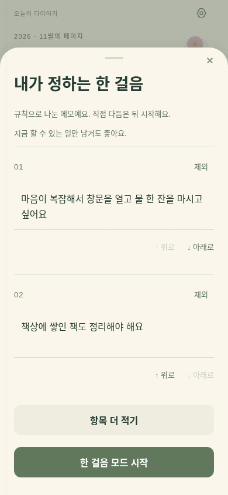
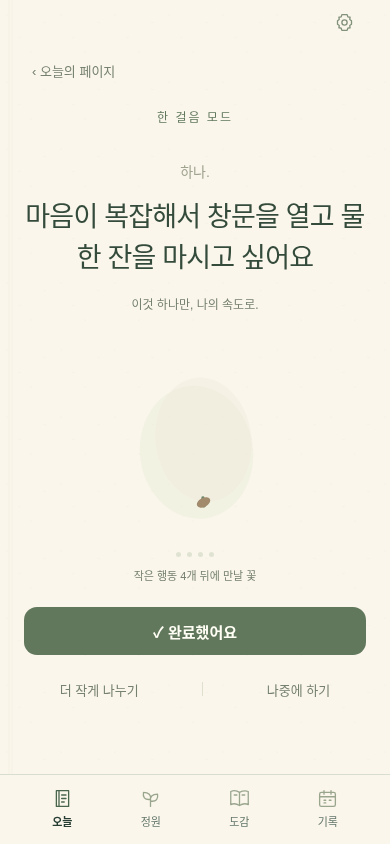
꽃을 모으는 두 가지 페이지
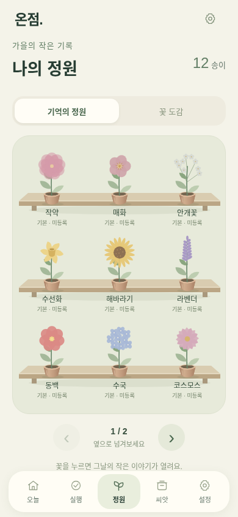
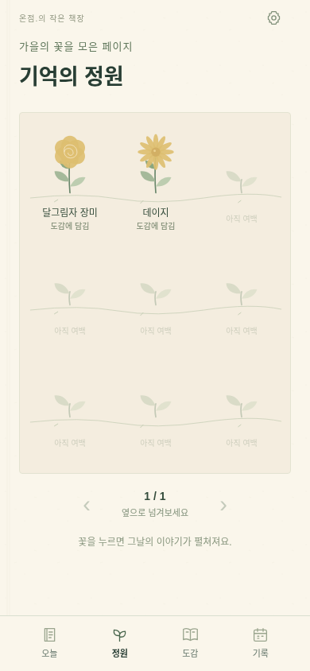
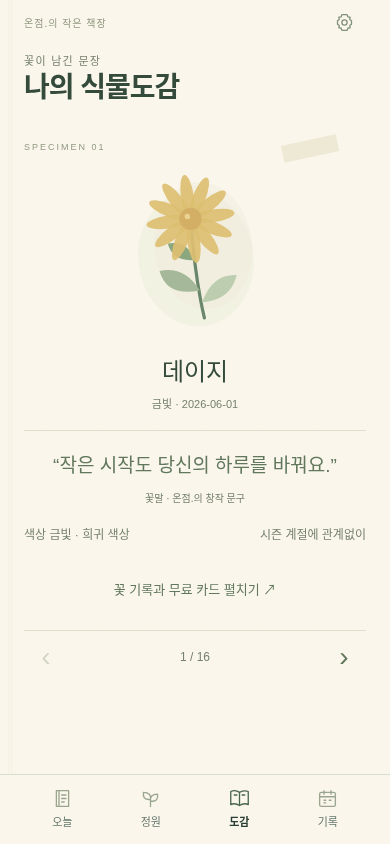
지나온 날도, 한 장의 다이어리
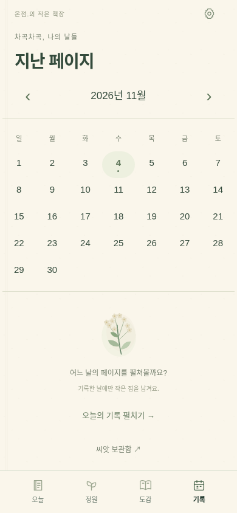
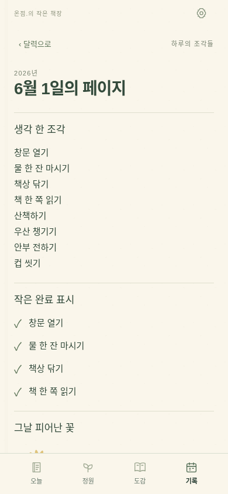
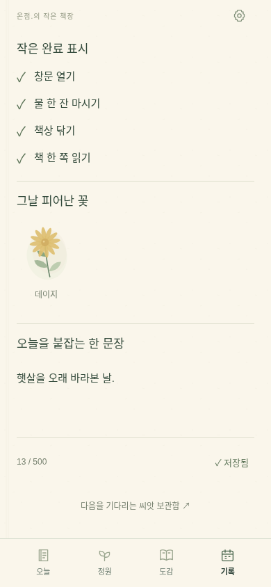
원본 프로토타입과 실제 완료 4개당 개화 규칙은 유지했습니다. 광고와 PLUS는 테스트 모드이며, 취소한 꽃도 정원에 계속 보관합니다.